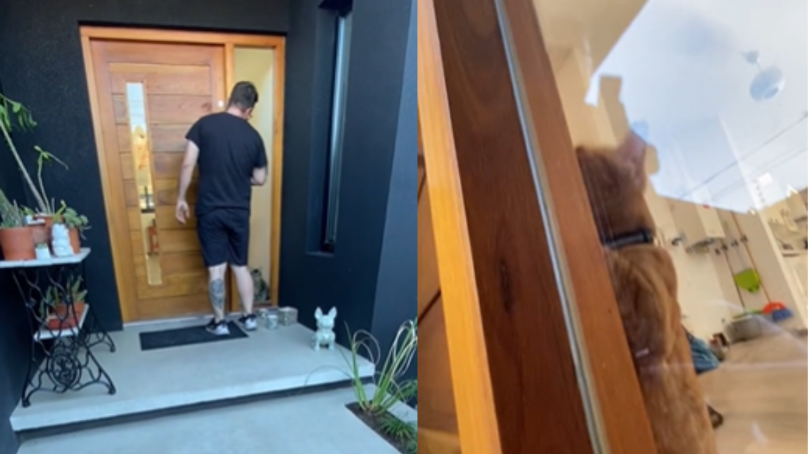

Novedades del momento
Inicio
Multimedia
Contacto
Se quedó afuera sin las llaves y la sorprendente habilidad de su gato la salvó

El dramático momento en el que salvan un perro de un tornado en Indiana
Maullido de gato
Info
Mascotas